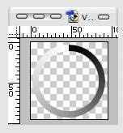

Controllers
Controllers are used to make SysStats perform actions in response to a trigger. A trigger might be you clicking on some part of the docklet, or it might be a timer, or an application sending a message or a wide range of other things.
SysStats includes the following controllers as standard (see also the script document for details of all the individual attributes):
Use this to set the value of a meter. Only a few meters allow this. Currently:
You might use this to change an image being displayed when a certain trigger happens. For example you could implement rollovers as follows:
Use this to send a different message than the one that triggered it!
You might do this if you have a ScriptController that can do several things in its HandleMessage function. It would be set to be triggered by a single message, but it could use the WPARAM or LPARAM value to determine what it should do. You would then use several MessageSender controllers that all send the same message but respond to different triggers by setting a different WPARAM or LPARAM value.
You might send an Application Command message to control other applications.
This controller responds to mouse clicks and drags by sending a windows message that you specify. The message contains a value that is read from a map image that you specify. The image itself isn’t displayed, but when the control is triggered it reads the value of the pixel under the mouse pointer and sends that as the LPARAM value of the message.
More correctly, it reads the red value of the pixel – the green, and blue values are ignored. This means that it can return a value in the range 0 thru 255.
If the alpha value under the mouse pointer is 0, the controller isn’t triggered.
Typically the image is a simple gradient. The following image is used to produce an annular control:

You use this to implement sliders of an arbitrary shape. For example a normal linear slider might use an image like the following:
A ‘knob’ might use a map image like the following:
A circular slider might use a map image like the following:
This controller can be set to send any windows message at regular intervals. You can’t specify the trigger, since the trigger is always a timer.
This controller is used to set the mouse pointer to a specific shape.
You might set the cursor to a hand when it hovers over some text that is used as a hyperlink.
This controller is used to invoke an application. The ‘application’ doesn’t have to be the name of an actual application! If it is a filename or a URL, windows will run the default application for that type of file for you.
There is also a list of ‘special’ applications such as ‘My Documents’ that you can use.
You can use a meter value as part of the ‘application name’.
You can implement a hyperlink using this. E.g.:
You might get the value displayed by the text overlay and the URL of the shortcut from a meter or you might hardwire them.
This controller is actually a script. You can use various scripting languages to implement the script, but the most common one is VB script. When the controller is triggered, the following function in the script is called:
SysStatsModel_HandleMessage(msg, wparam, lparam)
Control won’t return to SysStats until the function returns, so the function should not take a long time to execute.
SysStats makes two objects available to the script:
Through these two objects you can do pretty much anything you like to SysStats, its overlays, meters and controllers.
For information on these objects refer to the SysStats script documentation.
This is an asynchronous version of the standard script controller. The SysStatsModel_HandleMessage() function does not hold up the execution of SysStats, so it can take as long as it likes to complete execution.
This controller is used to handle files dropped from explorer or some other application. You should do two things with it:
1. Specify an XML meter whose value will be set to the list of files dropped.
2. Optionally specify a message that will be sent when the files are dropped.
The XML meter will contain a document of the following form:
<?xml
version="1.0"?>
<fileset>
<file><path>file
path 1</path></file>
<file><path>file
path 2</path></file>
</fileset>
The following VBScript will iterate through the list of dropped files:
Function
IterateOverFiles()
Dim nodeList
’ The XML meter is called dropped files
Set nodeList =
SysStatsModel.Meters("dropped files").GetNodeList("//path")
Dim node
For each node in nodeList
sourceFile = node.Text
’ Do something with sourceFile
Next
End
Function
Set the value of an XMLMeter to the list of dropped files then post a WM_USER message. An AsyncScript controller handles the WM_USER message. For example it might upload the files to a web site – an action which could take quite a while.
The included DTP.ini creates shortcuts to the dropped files in the config’s image folder. It sends a WM_USER message to DTPController.vbs which creates the shortcuts and then sets the value of the DTP.vbs script meter to the last image.